Abstände passend zum Pferd
Stangen und kleine Sprünge für Platz und Halle: jede Übung von oben gezeichnet, mit Abständen in Metern und Schritten passend zu deinem Pferd.
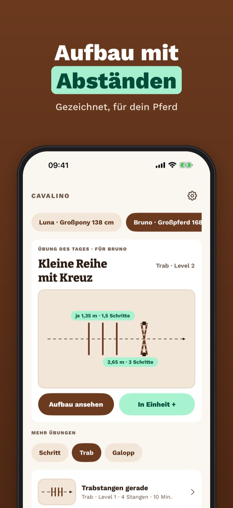
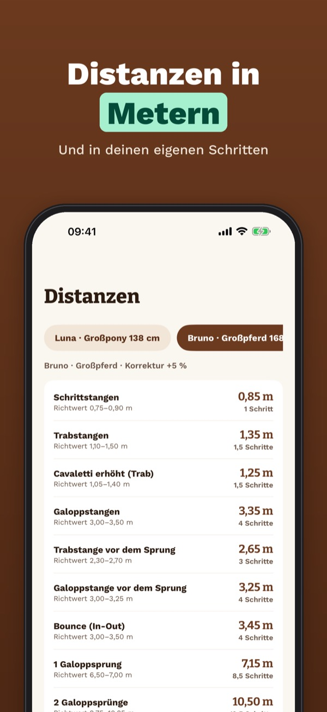
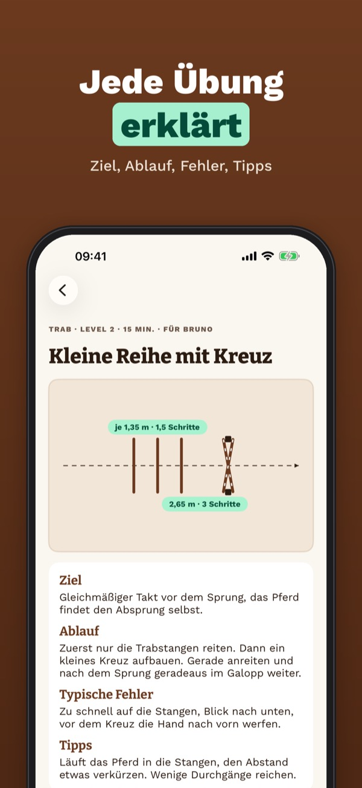
Cavalino ist deine Übungsbibliothek für Stangenarbeit und Springgymnastik. Wähle dein Pferd oder Pony, und jede Übung zeigt den Aufbau von oben mit den passenden Abständen – in Metern und in deinen eigenen Schritten. Plane Einheiten, führe Tagebuch und nimm die Aufbau-Karte mit auf den Platz.
Ein Teil der Übungen, ein Pferd, die Distanzen und der Umrechner gehen ohne Kauf. Cavalino Plus ist ein Einmalkauf: alle Übungen, beliebig viele Pferde, Einheiten mit Tagebuch, Aufbau-Karte als PDF und Teilen mit dem Trainer. Kein Abo.
Cavalino ersetzt keinen Reitunterricht. Abstände sind Richtwerte: passe sie immer an dein Pferd an. Bei Sprüngen Helm tragen und nie allein üben.
Terms of Use (EULA): https://www.apple.com/legal/internet-services/itunes/dev/stdeula/
Privacy: https://apps.baytech.nl/cavalino-eu/
Afstanden passend bij je paard
Balken en kleine sprongen voor buitenbak en binnenbak: elke oefening van bovenaf getekend, met afstanden in meters en passen voor jouw paard.
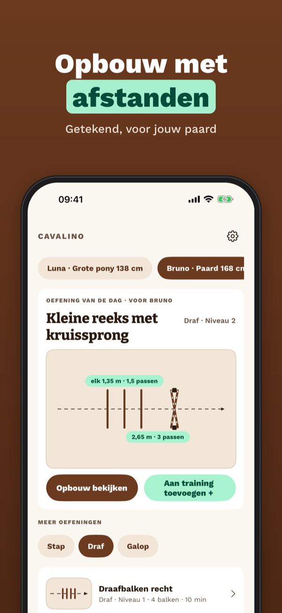
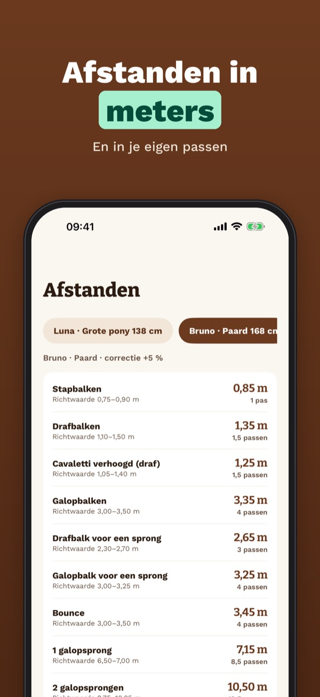
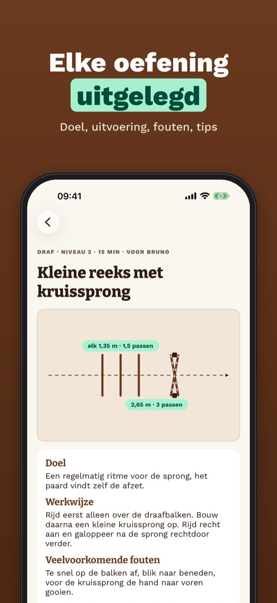
Cavalino is je oefenbibliotheek voor balkenwerk en springgymnastiek. Kies je paard of pony en elke oefening toont de opbouw van bovenaf met de juiste afstanden – in meters en in je eigen passen. Plan trainingen, houd een dagboek bij en neem de opbouwkaart mee de bak in.
Een deel van de oefeningen, één paard, de afstanden en de omrekening werken zonder aankoop. Cavalino Plus is een eenmalige aankoop: alle oefeningen, onbeperkt paarden, trainingen met dagboek, opbouwkaart als pdf en delen met je instructeur. Geen abonnement.
Cavalino vervangt geen rijles. Afstanden zijn richtwaarden: pas ze altijd aan je paard aan. Draag bij het springen een cap en spring nooit alleen.
Terms of Use (EULA): https://www.apple.com/legal/internet-services/itunes/dev/stdeula/
Privacy: https://apps.baytech.nl/cavalino-eu/
Distances adaptées au cheval
Barres au sol et petits sauts pour la carrière et le manège : chaque exercice dessiné vu du dessus, avec les distances en mètres et en pas pour ton cheval.
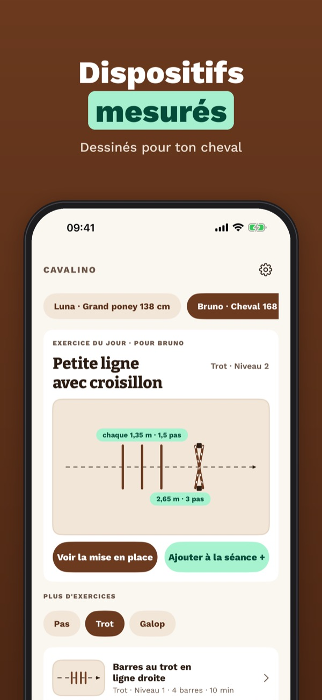
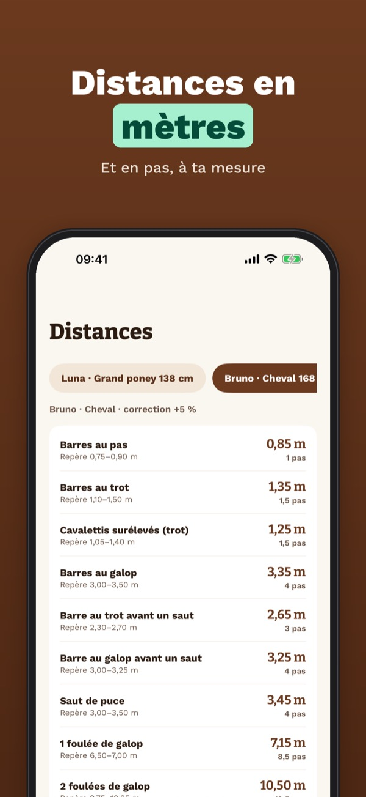
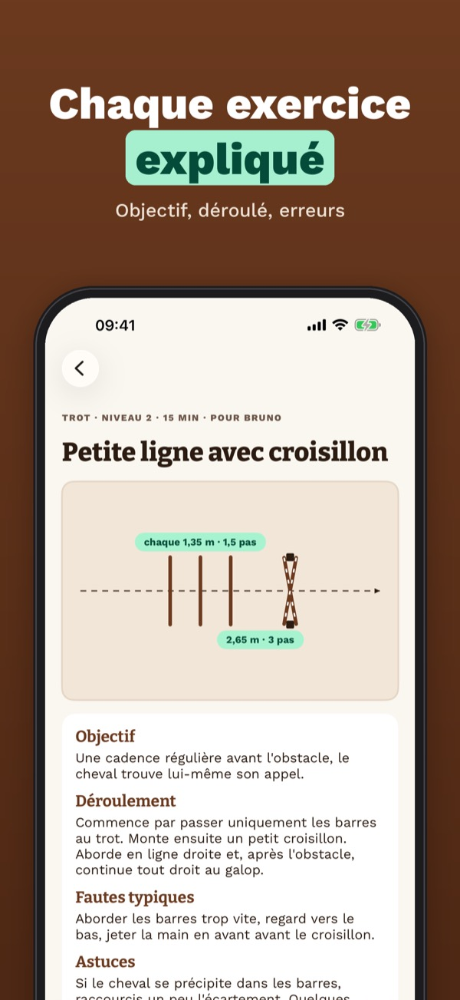
Cavalino est ta bibliothèque d’exercices de barres au sol et de gymnastique à l’obstacle. Choisis ton cheval ou ton poney : chaque exercice montre le dispositif vu du dessus avec les bonnes distances, en mètres et en pas. Planifie tes séances, tiens un carnet et emporte la fiche de mise en place.
Une partie des exercices, un cheval, les distances et la conversion fonctionnent sans achat. Cavalino Plus est un achat unique : tous les exercices, chevaux illimités, séances avec carnet, fiche PDF et partage avec le moniteur. Sans abonnement.
Cavalino ne remplace pas un cours d’équitation. Les distances sont indicatives : adapte-les toujours à ton cheval. Pour sauter, porte un casque et ne saute jamais seul.
Terms of Use (EULA): https://www.apple.com/legal/internet-services/itunes/dev/stdeula/
Privacy: https://apps.baytech.nl/cavalino-eu/
Avstånd anpassade efter hästen
Bommar och små hinder för ridbana och ridhus: varje övning ritad ovanifrån, med avstånd i meter och steg som passar din häst.
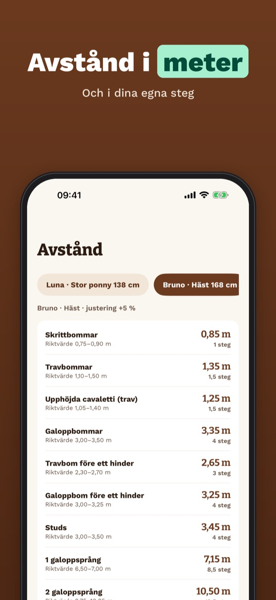
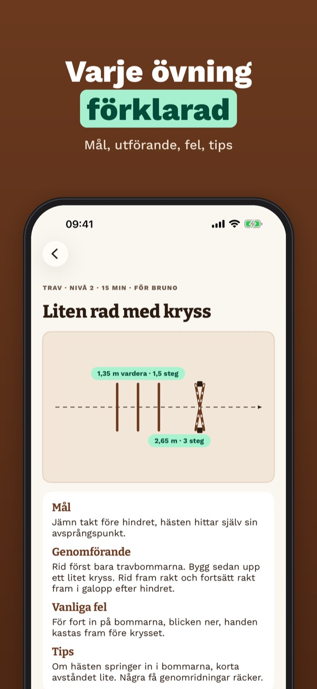
Cavalino är ditt övningsbibliotek för bomarbete och hoppgymnastik. Välj din häst eller ponny så visar varje övning uppbyggnaden ovanifrån med rätt avstånd – i meter och i dina egna steg. Planera pass, för dagbok och ta med uppbyggnadskortet till banan.
En del av övningarna, en häst, avstånden och omräkningen fungerar utan köp. Cavalino Plus är ett engångsköp: alla övningar, obegränsat med hästar, pass med dagbok, uppbyggnadskort som pdf och delning med tränaren. Ingen prenumeration.
Cavalino ersätter inte ridlektioner. Avstånden är riktvärden: anpassa dem alltid efter din häst. Bär hjälm när du hoppar och hoppa aldrig ensam.
Terms of Use (EULA): https://www.apple.com/legal/internet-services/itunes/dev/stdeula/
Privacy: https://apps.baytech.nl/cavalino-eu/
Odległości dopasowane do konia
Drągi i małe skoki na plac i halę: każde ćwiczenie narysowane z góry, z odległościami w metrach i krokach dopasowanymi do Twojego konia.
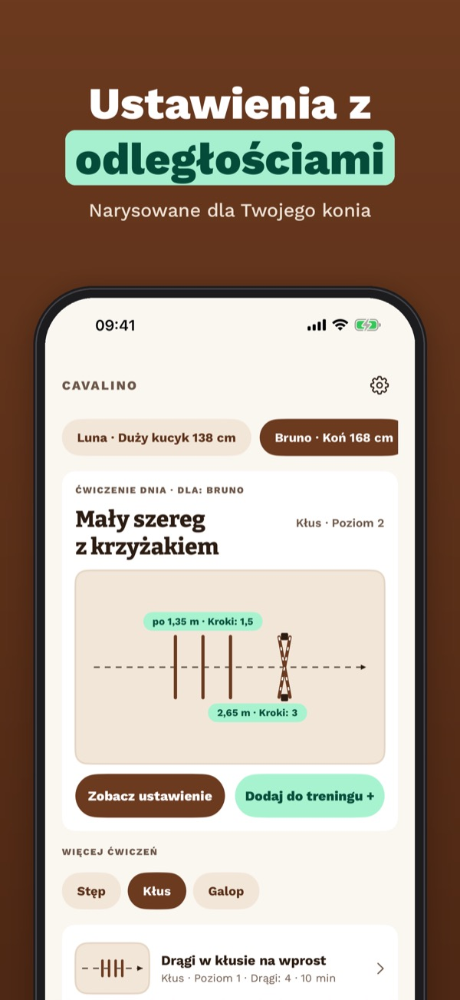
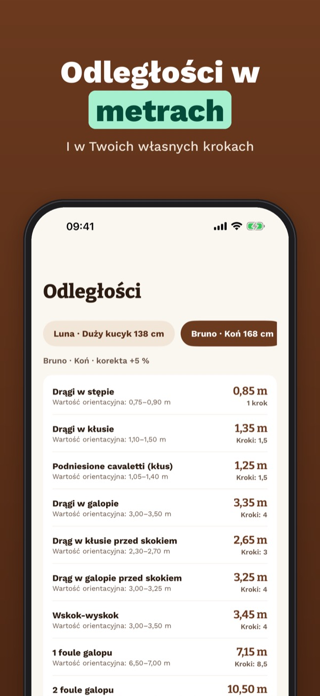
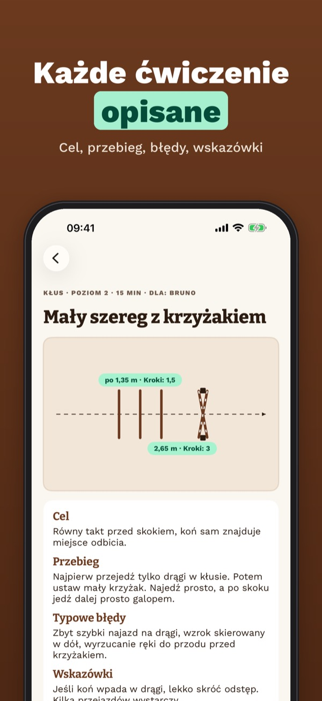
Cavalino to biblioteka ćwiczeń z drągami i gimnastyki skokowej. Wybierz konia lub kucyka, a każde ćwiczenie pokaże ustawienie z góry z właściwymi odległościami – w metrach i w Twoich krokach. Planuj treningi, prowadź dziennik i zabierz kartę ustawienia na plac.
Część ćwiczeń, jeden koń, tabela odległości i przelicznik działają bez zakupu. Cavalino Plus to jednorazowy zakup: wszystkie ćwiczenia, dowolna liczba koni, treningi z dziennikiem, karta PDF i udostępnianie trenerowi. Bez subskrypcji.
Cavalino nie zastępuje lekcji jazdy. Odległości są orientacyjne: zawsze dopasuj je do swojego konia. Przy skokach noś kask i nigdy nie skacz sam.
Terms of Use (EULA): https://www.apple.com/legal/internet-services/itunes/dev/stdeula/
Privacy: https://apps.baytech.nl/cavalino-eu/
Distanze su misura del cavallo
Barriere a terra e piccoli salti per campo e maneggio: ogni esercizio disegnato dall’alto, con distanze in metri e passi adatte al tuo cavallo.
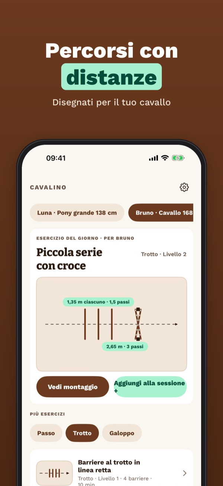
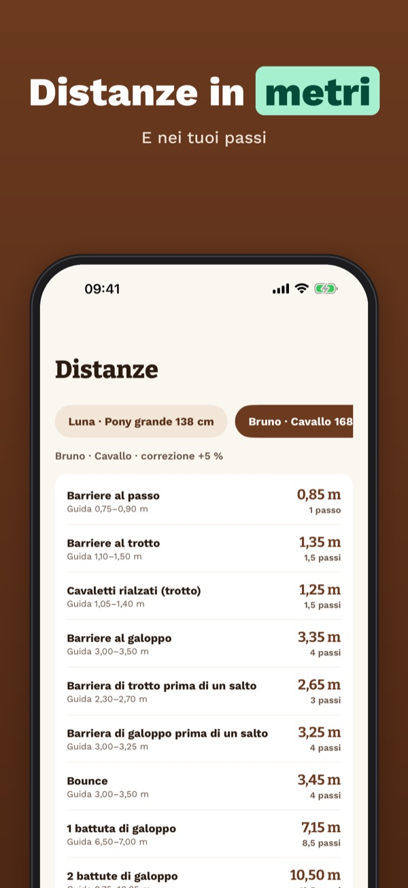
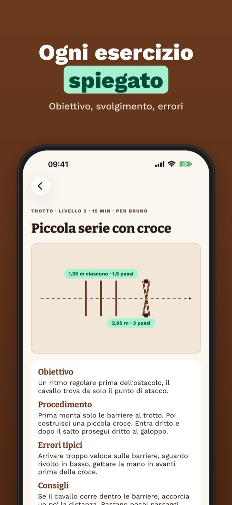
Cavalino è la tua raccolta di esercizi con barriere a terra e ginnastica sul salto. Scegli il cavallo o il pony e ogni esercizio mostra il percorso dall’alto con le distanze giuste, in metri e nei tuoi passi. Pianifica le sessioni, tieni un diario e porta la scheda di montaggio in campo.
Una parte degli esercizi, un cavallo, le distanze e la conversione funzionano senza acquisto. Cavalino Plus è un acquisto unico: tutti gli esercizi, cavalli illimitati, sessioni con diario, scheda PDF e condivisione con l’istruttore. Nessun abbonamento.
Cavalino non sostituisce le lezioni di equitazione. Le distanze sono indicative: adattale sempre al tuo cavallo. Nel salto indossa il casco e non saltare mai da solo.
Terms of Use (EULA): https://www.apple.com/legal/internet-services/itunes/dev/stdeula/
Privacy: https://apps.baytech.nl/cavalino-eu/